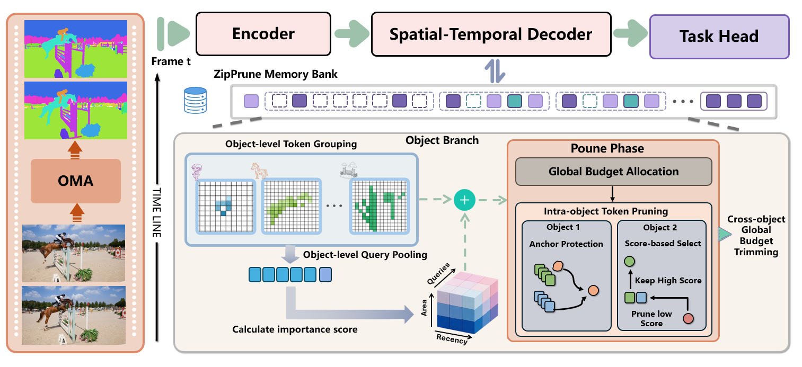

TL;DR: Zip-VGGT is an object-centric spatiotemporal KV compression framework for streaming vision transformers that keeps memory bounded while preserving high-fidelity long-horizon 4D perception.
Zip-VGGT unifies spatial and temporal KV control with object-level memory states. It combines crisp 2D entity boundaries from lightweight SAM masks and implicit motion cues from backbone attention, then applies object-aware update, selection, and retrieval under a fixed cache budget.

Visualization Comparison 1

Visualization Comparison 2

Zip-VGGT formulates long-horizon streaming 4D perception as bounded-memory inference with coupled goals in memory efficiency, geometric fidelity, and dynamic continuity. By unifying object-centric memory organization with RD-Lite allocation, dual-bank retention, and history-aware pose-query suppression, the framework maintains stable streaming performance and avoids unbounded cache growth. The ablations show these modules are complementary, supporting object-centric memory management as an effective strategy for robust long-horizon streaming vision.